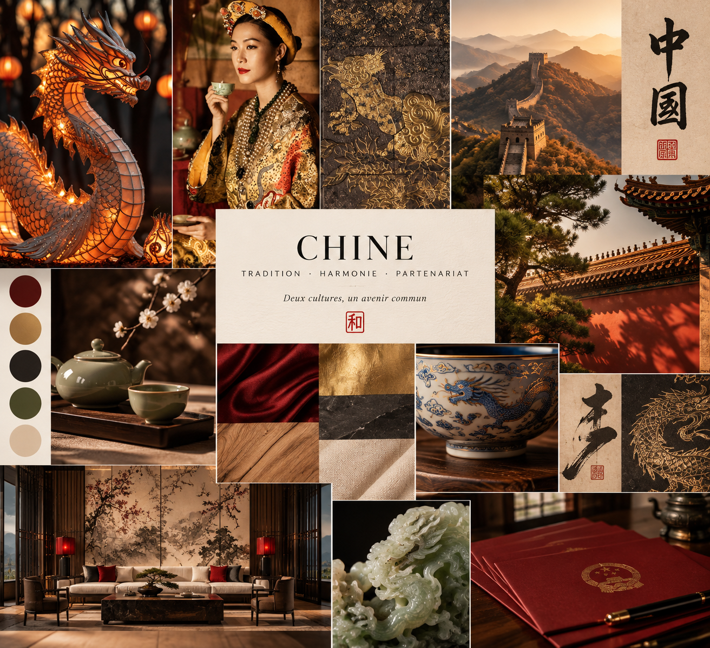

China : Tradition, Harmony, Partnership
2026This moodboard explores a visual language for AD International Consulting’s positioning at the intersection of Chinese heritage and Western business rigor. Rather than leaning on tourist iconography, the direction draws from craft and material culture — lacquer, jade, blue-and-white porcelain, calligraphy, imperial red — to build a vocabulary that feels authoritative in a cross-border negotiation room, not decorative on a travel brochure.
The concept rests on three pillars: Tradition (motifs, calligraphy, and noble materials as visual bedrock), Harmony (the 和 seal as a recurring anchor, balancing Chinese warmth with Western restraint), and Partnership (an image built for durable business relationships rather than surface-level cultural reference).
The palette is dominated by lacquered burgundy and ink black, with imperial gold used sparingly as an accent and natural linen for breathing room — roughly 60% ink, 25% burgundy and linen, 15% gold. Typography pairs a serif display face for titles and seals with a clean sans-serif for body copy and working documents, keeping the system legible across formats.
The board closes with a set of early applications — business card, presentation folder, and letterhead — showing how the concept translates from inspiration to working brand tools without tipping into pastiche.
Direction artistique · AD International Consulting · Paris
